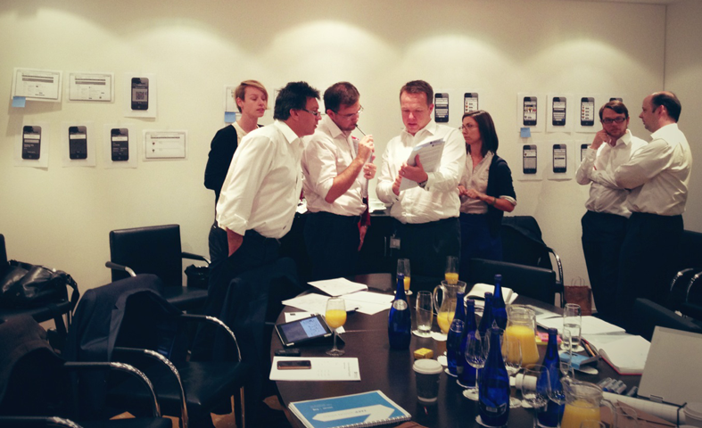
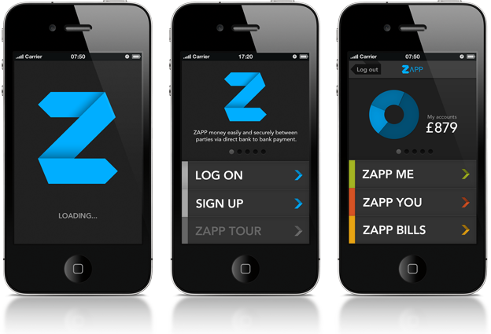
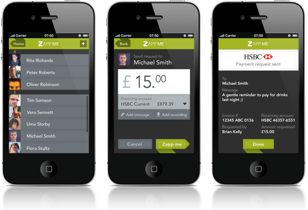

photo above was taken during on-site design workshop with client in london, uk.objectives
to develop a ubiquitous payment system that could potentially disrupt the finance/banking industry in the UK market. frog were engaged by vocalink to help design and build a new online payment mark and mobile application that allows consumer to easily make any payment transaction simply by using their own bank account.
this application is designed to be a game changer, a platform-independent approach that will put banks back in the heart of every transaction. the end goal is to eventually eliminate the need of having cards -- like visa/mastercard -- when making or accepting payment transaction.
role + responsibilities
product lead
- led team of design technologist, program manager, iXD and visual designers.
- led and facilitate client workshop and ideation session, as well as internal liasion between different stakeholders from the client side.
deliverables in this role includes information architecture, storyboard for the concept video and user stories.
client
vocalink | uk
project deliverables
working prototype (BETA) for iOS device and interactive simulation with canned data.
deliverables snapshots (of the prototype)
These are early prototype of the mobile app that has since gone through rounds of iterations. For the finished product, visit Zapp Mobile App site to learn more.


process
agile-led project management environment with daily stand-up and check out attended by the whole team -- each stand up lasts no more than 10 minutes -- that highlights progress, status and identifying any potential road blocks.
tools
adobe creative suites (inDesign, illustrator, photoshop, after f/x), axure, raphael.- js, ms suites, confluence and jira project management tool.
. . . . .
#frogDesign, #UK, #ConceptVideo, #InformationArchitecture, #Storyboard, #Wires #HeroWorkflow, #UserStories, #UsabilityTesting, #CustomerJourneys, #InteractivePrototype
. . . . .